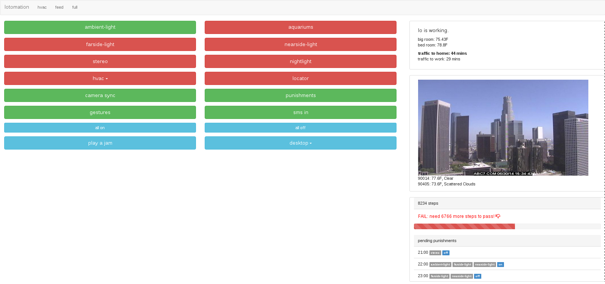

How I'm hacking at my life
with less computers
lo.ladevops.org/june2014
a short timeline
4 years ago
50 lbs later...
this guy
but that's only a symptom
Lots of power control devices on the market (over RF, Network/Wi-Fi, "as a service," more)
microcomputers (BeagleBone, Raspberry Pi)

Share failures
Make personal dashboards
Turn the FitBit into a locator by pinging it for LE BlueTooth signal strength
Define zones
GPIO is cool!

Stereo input switcher
DIY thermostat control
super small!
temp sensor: one component plus one resistor
Use less screens to do stuff
Have robots help humans

Trigger real life indicators from FitBit's API and exercise goals
Not enough exercise at 9pm? No stereo for me.
Not enough exercise at 10pm? All lights go on
Not enough exercise at 11pm? All lights go off, then on, then off...
Get dissed
Still moving in the living room at 3am?
netstat on the router shows activity from my personal machines?
Shut down the apartment
Thank you
Code: github.com/flores/lotomation
Demos: youtube.com/killerbabies